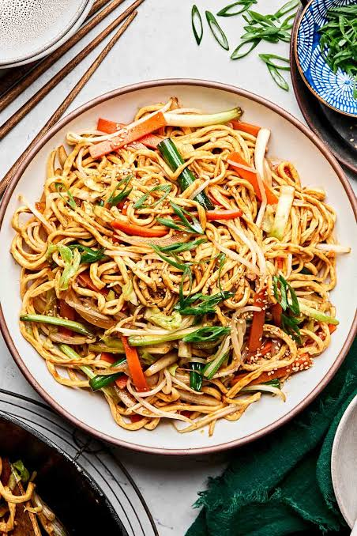

Noodles

Description
Make this classic Indo-Chinese Veg Hakka Noodles in just 20 minutes.
Ingredients
- Noodles: 1 packet Hakka noodles (approx. 250g)
- Aromatics: 1 tbsp finely chopped garlic, 1 tsp chopped ginger, 1 chopped green chili
- Vegetables: 1 medium onion (sliced), 1 cup shredded cabbage, 1 medium carrot (julienned), 1/2 capsicum
(sliced)
- Sauces & Seasoning: 1.5 tsp soy sauce, 1 tbsp red chili sauce, 1 tsp white vinegar, 1 tsp black pepper
powder, and salt to taste
- Garnish: 3-4 stalks of spring onion (chopped)
- Oil: 2 tbsp (sesame or neutral vegetable oil)
Step-by-Step Instructions
- Boil the Noodles: Bring 2 liters of water to a rolling boil with 1 tbsp of oil and 1 tsp of salt. Add the
noodles and cook until they are about 90% done (they should have a slight bite). Drain and rinse immediately
with cold water to prevent sticking. Toss with 1 tsp of oil and set aside.
- Sauté Aromatics: Heat oil in a large skillet or wok on high heat. Add the chopped garlic, ginger, and green
chilies. Stir-fry for about 30 seconds until fragrant.
- Stir-Fry the Vegetables: Add the sliced onion and all the vegetables (cabbage, carrot, capsicum). Toss and
stir-fry on high heat for 1 to 2 minutes. The vegetables should remain slightly crunchy.
- Add Sauces: Turn the heat to medium. Add soy sauce, chili sauce, vinegar, black pepper, and salt. Mix
everything together.
- Combine: Add the cooked noodles and the white parts of the spring onions into the wok. Using two forks or
spatulas, gently toss the noodles with the vegetable and sauce mixture until evenly coated.
- Serve: Cook for 1-2 minutes until heated through. Garnish with the green parts of the spring onions and
serve hot.
Home